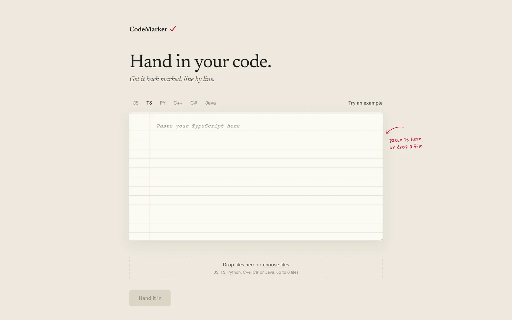
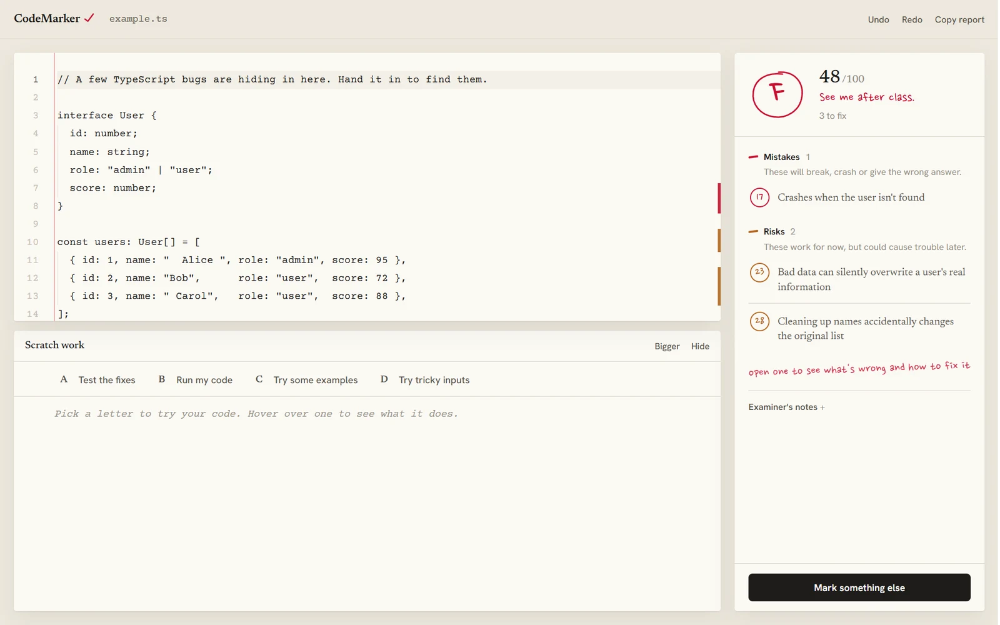
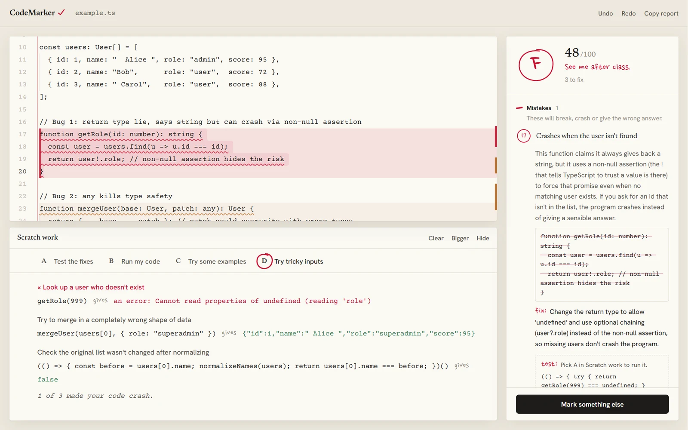
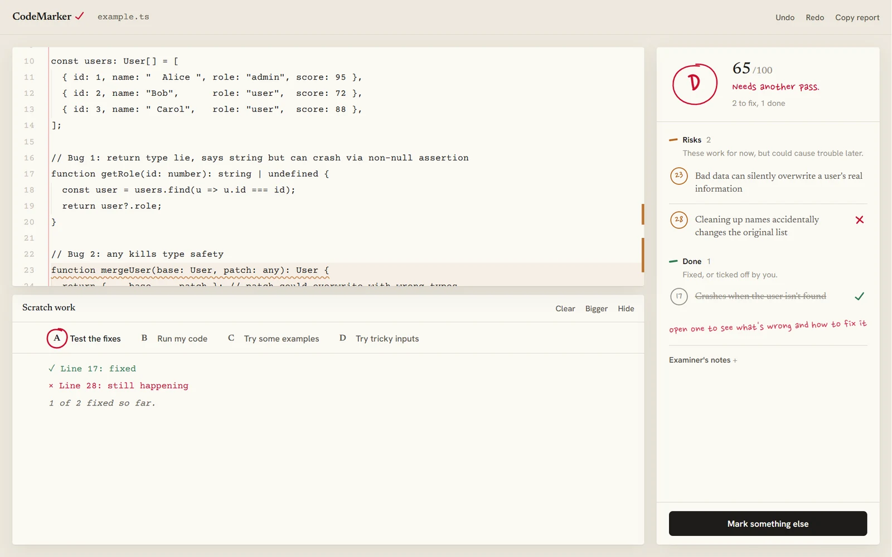

From a generic dev tool to a marked paper
The first version was called CodeRev: near-black, neon green, a gradient headline promising your code "brutally reviewed". It worked, but it looked like every other AI developer tool.
So I redesigned it around one idea everyone already understands: handing in work and getting it back marked. The paper is ruled with a red margin line, code is set like typewriter text, and every judgement is made in pen. I dropped the "AI" badges, cut the copy down to two lines, and renamed it CodeMarker. As before, the build was heavily AI-assisted; the concept and the decisions below are mine.

Marked like an exam
A grade you read in a second
The score becomes a letter circled in red pen that draws itself, with a remark underneath, from "Nothing left to fix" to "See me after class". Fixing problems raises it live, so progress is felt, not just counted.
Colour means one thing each
Red pen is for mistakes, pencil orange for risks, blue for improvements, green only for done. Problem lines on the paper are washed and underlined in the same colours, so the code and the corrections read as one page.

Written for everyone
Code reviews are usually written for the person who already knows what's wrong. I wanted anyone, including someone learning, to understand every correction without looking anything up.
- Titles say what goes wrong, not what it's called"Crashes when the user isn't found", not "Unsafe non-null assertion". Jargon only appears when it can't be avoided, and then it's explained in the same sentence.
- Plain names for severityErrors, warnings and suggestions became Mistakes, Risks and Improvements, each with a one-line explanation under the heading.
- Every correction answers the same three questionsWhat happens, when it happens, and why it matters, then what to change. The old code is struck through in red, and the fix is written in pen.
- Tips that explain without talking downHovering any action says what it does and why you'd want it, after a short pause so the tips never flicker in your way.

Proving a fix works
A suggested fix is only a claim until you run it, so Scratch work is set up like a multiple-choice question. Clicking a letter circles it in red pen, like a student choosing an answer, and then does that thing.
- A, test the fixesEach correction comes with a small test that is true once the problem is gone. Run them and each correction gets a tick or a cross. Applying a fix circles A and re-tests on its own.
- B, C and D: run it, try examples, try tricky inputsSee what the code prints, what everyday inputs return, and what happens with the awkward ones, like missing users or empty lists, where most bugs hide.
- Different choices for different languagesJavaScript and TypeScript run in the browser, and Python runs on Pyodide. C++, C# and Java need a compiler, so for them the letters copy ready-made tests and calls to run in your own project instead of pretending.
- A score of 100 has to mean nothing to fixAn early version could give full marks and still list problems. The score, the corrections and the tests now have to agree.

Stack
- Next.js
- TypeScript
- Monaco editor
- Sucrase
- Pyodide
- Framer Motion
- Claude API